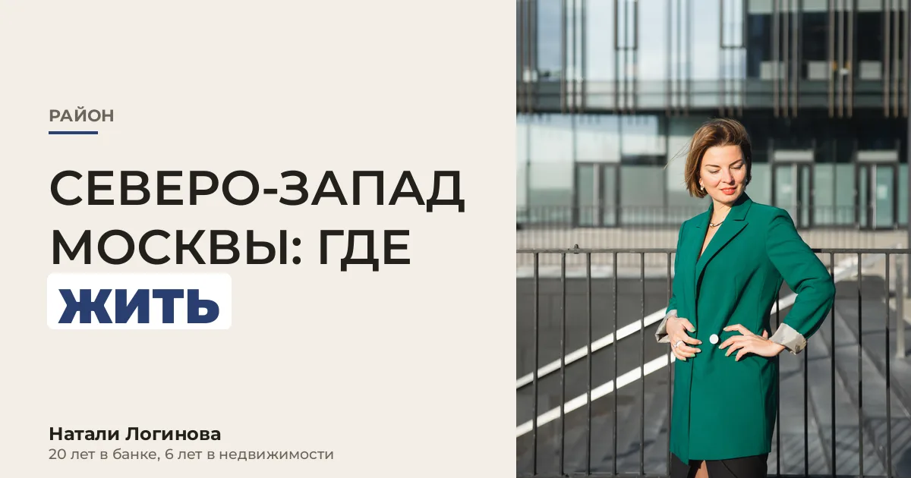

Северо-Запад часто просят семьи, с которыми я, Натали Логинова, подбираю квартиру в Москве. Ниже разбираю, из каких районов состоит округ, что в нём ценят мои клиенты и что я проверяю по адресу, прежде чем везти на показ.
Северо-Западный административный округ (СЗАО) состоит из 8 районов: Куркино, Митино, Покровское-Стрешнево, Северное Тушино, Строгино, Хорошёво-Мнёвники, Щукино и Южное Тушино. Митино и Куркино находятся за МКАД.
В разговоре «хочу на Северо-Запад» мои клиенты часто имеют в виду и город Красногорск за МКАД. Красногорск это город Московской области, центр городского округа Красногорск, и регистрация по такому адресу будет в Московской области. Поэтому первым делом я уточняю, Москва нужна или область.
В моей практике клиенты называют три причины выбрать Северо-Западный административный округ: воду и зелень у дома, метро и тихий адрес. Соседство с бывшими промзонами и стройками, например с территорией бывшей промзоны «Тушино», я проверяю отдельно.
Насколько близко центр, зависит от конкретного дома. Время в пути я меряю от подъезда до вашей работы в будний день в 8:30 утра.
Первичный рынок это первая продажа квартиры в новом доме, обычно её продаёт застройщик. Вторичный рынок это перепродажа квартиры, у которой уже был собственник, даже если дом построен недавно. Двор и паркинг я проверяю отдельно в каждом доме.
| Что проверяю | Вторичка | Новостройка |
|---|---|---|
| Дом | год постройки, перекрытия, капремонт | сроки сдачи, застройщик |
| Реновация | входит ли дом в программу | что снесут и построят рядом |
| Парковка | места во дворе, платная парковка | подземный паркинг, машино-места |
Если дом входит в программу реновации, собственнику по правилам программы положено равнозначное жильё или денежное возмещение, об этом статья Квартира в доме под реновацию. Другой округ Москвы я разбирала в статье Квартира на Юго-Западе Москвы.
Перед покупкой квартиры на Северо-Западе Москвы я проверяю по адресу пять вещей: дорогу в час пик, цены сопоставимых квартир, планы стройки рядом, закреплённую школу и шум.
Общий порядок выбора района у меня в статье Как выбрать район для покупки квартиры.
Я, Натали Логинова, подберу под ваш бюджет и маршрут семьи район на Северо-Западе Москвы, сравню вторичку и новостройки по адресам и посчитаю платёж, если покупка в ипотеку. Вы получите короткий список квартир, которые стоит смотреть.
Написать можно в мою личку в Telegram: подобрать квартиру на Северо-Западе Москвы.
Северо-Западный административный округ это 8 районов Москвы, а город Красногорск рядом уже Московская область. Район внутри округа я выбираю по дороге до работы, школе и шуму у конкретного дома.
В Северо-Западном административном округе 8 районов: Куркино, Митино, Покровское-Стрешнево, Северное Тушино, Строгино, Хорошёво-Мнёвники, Щукино и Южное Тушино.
Нет, Красногорск это город Московской области, центр городского округа Красногорск. Регистрация по адресу в Красногорске будет в Московской области.
Зависит от бюджета, школы и маршрута на работу. За МКАД Митино и Куркино, внутри МКАД Строгино, Щукино и Хорошёво-Мнёвники. Я сравниваю их по дороге до школы и работы именно вашей семьи и проверяю шум по конкретному адресу.
Состав СЗАО взят из документа Правительства Москвы о составе административных округов, линии метро из материалов Московского метрополитена, природные территории из материалов Мосприроды, Москомспорта и проекта усадьбы Покровское-Стрешнево, статус Красногорска из документа администрации городского округа. Наблюдения о запросах клиентов это мой опыт подбора квартир.
Проверено 18 ноября 2026: состав СЗАО, линии метро, природные территории округа, статус Красногорска.
Хотите жить на Северо-Западе Москвы: подбор квартиры в Telegram